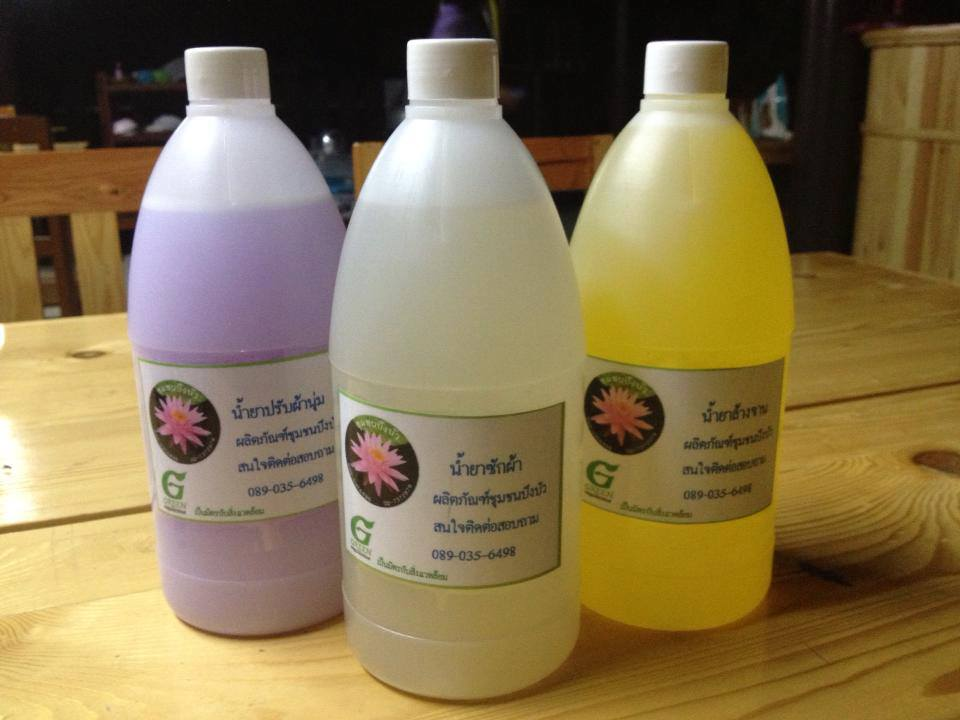

ขั้นตอนการทำนำ้ยาซักผ้า
วัสดุอุปกรณ์
1. หัวเชื้อน้ำยา (N 70) 1 กิโลกรัม
2. สมุนไพรรสเปรี้ยว 3 กิโลกรัม (สับปะรด มะกรูด มะนาว ฯ)
3. เกลือ / ผงข้น 1 กิโลกรัม
4. น้ำสะอาด 10 กิโลกรัม
ขั้นตอน / วิธีทำ
1. ล้างมะนาว มะกรูด และสับปะรดให้สะอาด หั่นเป็นชิ้นๆ แล้วต้ม กรองเอาแต่น้ำ 3 กิโลกรัมผสมน้ำสะอาด 10 กิโลกรัม จะได้น้ำสมุนไพร 13 กิโลกรัม (หากอยากให้มีสีเหลืองใส่ขมิ้นในน้ำต้มสมุนไพรไปด้วย 1 ขีด)
2. นำ N 70 จำนวน 1 กิโลกรัมใส่ถังก้นเรียบ ค่อยๆ รินน้ำสมุนไพรใส่ถัง ใช้พายไม้กวนน้ำสมุนไพรให้ผสมเข้ากันกับ N 70โดยกวนไปทางเดียวกันตลอดในทิศทางใดทิศทางหนึ่งเพื่อป้องกันไม่ให้เกิดฟองมากโดยกวนประมาณ 15 นาที
3. จากนั้นค่อยๆ เทน้ำสมุนไพรลงไปในถังในระหว่างที่กวน โดยโรยเกลือป่นลงไปด้วยเป็นระยะพร้อมๆ กัน จำนวน 1 กิโลกรัม คนให้เข้ากันจนเป็นสีขาวนวล
4. ตั้งทิ้งไว้ 6 ชั่วโมง ก่อนนำไปใช้งาน (หรือทิ้งไว้ 1 คืน)
5. จากนั้นนำไปใช้ล้างจาน ล้างคราบสกปรกต่างๆ ได้เลยค่ะ